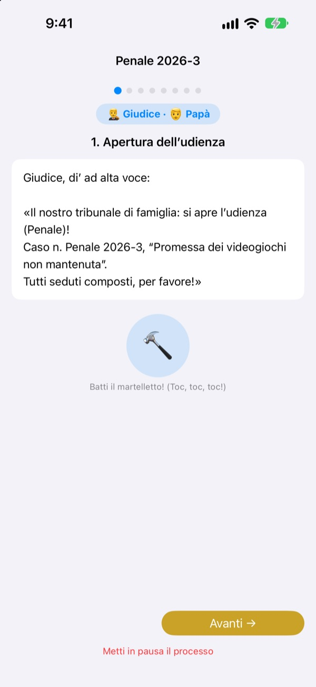
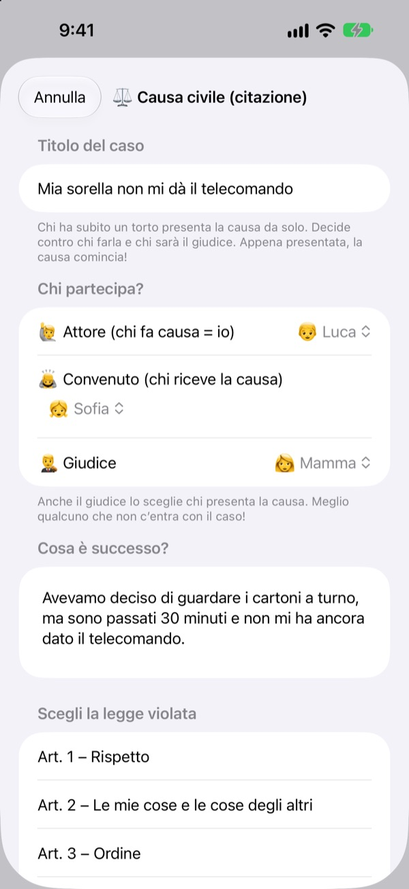
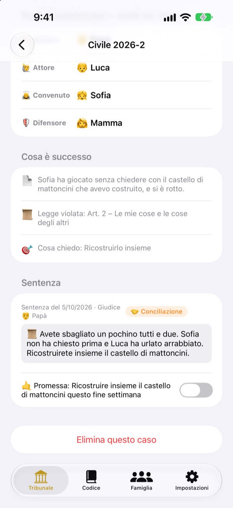
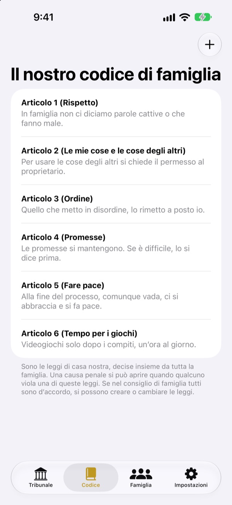

È ingiusto?
Niente lacrime, si va in tribunale.
Tuo figlio presenta da solo la causa come attore, e la famiglia si divide i ruoli di giudice e avvocato. A ogni passo un copione dice a chi tocca e cosa dire, così anche il primo processo va come uno vero.
Niente pubblicità, niente acquisti, nessuna registrazione. Tutto resta su questo dispositivo.

Apri un’udienza
Una causa veloce: «Mio fratello non mi dà il telecomando.» Cambia in alto il livello del linguaggio, batti il martelletto e avvia il timer. Ci sono suoni, controlla il volume.
«Ha cominciato lui!» Stanco di fare sempre l’arbitro?
Quando si litiga, alla fine decide quasi sempre un adulto. Chi perde piange perché gli sembra ingiusto, e chi vince non sa bene perché. Tribunale di Famiglia dà ai bambini un ordine: raccontare tutta la propria versione e ascoltare quella dell’altro fino in fondo. E la sentenza si chiude con una promessa, non solo con una punizione.
Chi si sente trattato ingiustamente fa causa da sé
Chi trova qualcosa ingiusto diventa attore e presenta la causa. Contro chi, e chi farà il giudice, lo decide chi fa causa. I bambini possono perfino fare causa a mamma e papà.
Hai visto qualcuno infrangere una regola di casa? Diventa pubblico ministero e avvia un processo penale. Giudice può essere solo chi non è né attore né convenuto.

Le sentenze finiscono con una promessa
Con la sentenza si decide una promessa o una sanzione, da spuntare quando è mantenuta. Le cause chiuse diventano i vostri precedenti.
Le sanzioni consigliate partono dal rimediare e dal ricucire i sentimenti, più riparazione che punizione. Togliere videogiochi o TV viene per ultimo.

Casa vostra, leggi vostre
Scrivete come articoli le regole decise insieme, come il rispetto, mettere in ordine e mantenere le promesse, e aggiungetele o cambiatele quando volete. Nella causa si sceglie la legge infranta.
«Scopri il tribunale» spiega cosa fanno giudice, attore, pubblico ministero e avvocato, e come si svolge un processo.

Si parte in tre passi
- 1
Aggiungi la famiglia
Bastano un nome e un’emoji. Nessun account.
- 2
Presenta una causa
Ingiustizia? Civile. Regola di casa infranta? Penale. Poi scegli il giudice.
- 3
Apri l’udienza
Segui il copione, tieni il tempo col timer e pronuncia la sentenza col martelletto.
Parole che crescono con tuo figlio
- Giudice
- Semplice: Arbitro · Tribunale: Presidente
- Attore
- Semplice: Chi ha subito un torto · Tribunale: Attore
- Convenuto
- Semplice: Chi risponde · Tribunale: Convenuto
- Pubblico ministero
- Semplice: Chi ha visto · Tribunale: Pubblico ministero
- Imputato
- Semplice: Chi risponde · Tribunale: Imputato
- Difensore
- Semplice: Chi aiuta · Tribunale: Difensore
- Civile
- Semplice: Non è giusto · Tribunale: Civile
- Penale
- Semplice: Promessa infranta · Tribunale: Penale
Scegli il livello del linguaggio nelle Impostazioni e le parole sullo schermo e nel copione cambiano tutte insieme. Prova Semplice per la scuola dell’infanzia e Standard per la primaria.
Domande frequenti
Da che età?
Ogni bambino che sa leggere può giocare con un genitore. Con il copione, le indicazioni e il livello Semplice partecipano anche i più piccoli, se un adulto legge ad alta voce.
È davvero gratis?
Sì. Niente pubblicità e nessun acquisto che sblocchi funzioni. Nelle Impostazioni c’è una mancia facoltativa per lo sviluppatore, che non sblocca né blocca nulla.
Serve internet?
No. Udienze e archivio funzionano del tutto offline. Servono internet e l’accesso a iCloud solo per inviare un feedback dalle Impostazioni.
Dove vengono salvati i dati?
Famiglia, leggi, udienze e sentenze restano solo sul dispositivo e non vanno a nessun server. Allo sviluppatore arrivano solo i feedback che invii tu e statistiche d’uso anonime che non ti identificano.
Posso fare un backup o passare a un altro dispositivo?
Con «Salva i dati» nelle Impostazioni esporti tutto in un file, e con «Carica i dati» sull’altro dispositivo ritrovi tutto com’era. Si caricano anche i backup della vecchia versione web.
Funziona su iPad?
Sì, su iPhone e iPad. Uno schermo grande è perfetto con tutta la famiglia intorno.
E se le sanzioni diventano troppo dure?
Quando il pubblico ministero chiede una sanzione, il copione ricorda che non deve essere troppo pesante ma fattibile. Le sanzioni consigliate partono dal riparare: rimediare, ricucire i sentimenti, mettersi nei panni dell’altro.
Come cancello tutto?
Eliminando l’app spariscono tutti i dati sul dispositivo. Nulla ne è mai uscito, quindi non resta niente altrove. Per cancellare un feedback inviato, scrivici.
Bug, idee o altro? Scrivi a leeo@kakao.com. Puoi anche inviare un feedback dalle impostazioni dell’app.